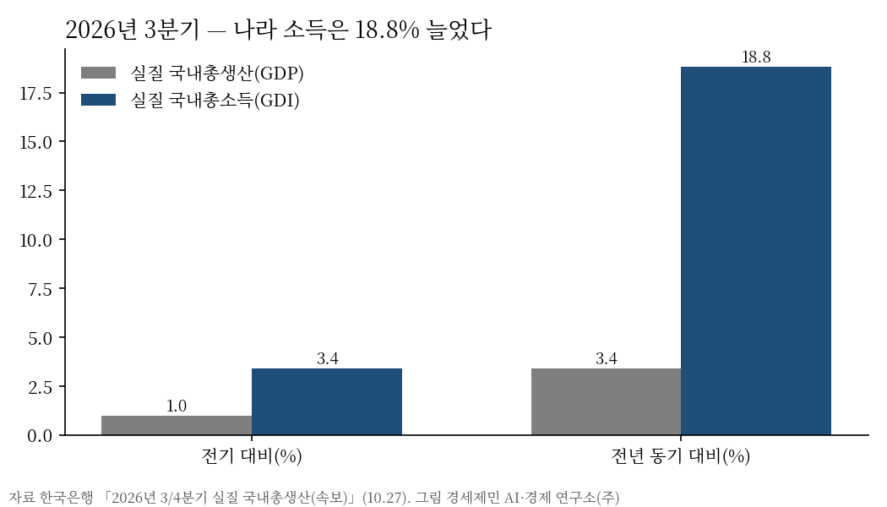
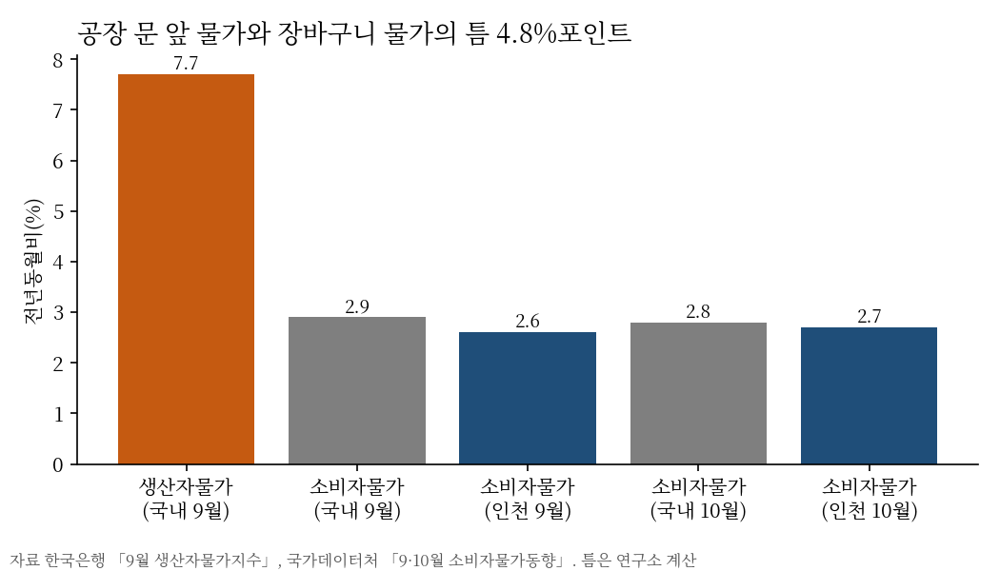
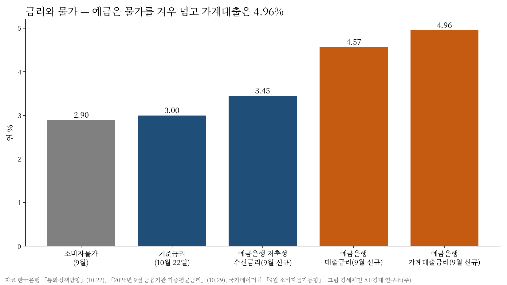

[10월 보고서] 나라 소득은 18.8% 늘었는데 인천 자영업자는 2만6500명 줄었다
경세제민연구소 10월 보고서 요약
자영업자 8.6%·비정규직 실질 월급 1.8% 감소, 가계대출 금리 4.96%

요약
경세제민 AI·경제 연구소가 10월 보고서를 냈다. 연구소가 매달 내는 정기 보고서다. 9월 통계를 기준으로 시민 살림에 닿는 숫자를 여덟 꼭지로 읽고, 숫자마다 기관 원문과 세 번 맞췄다.
2026년 9월 인천 자영업자는 28만2300명으로 1년 전보다 2만6500명(8.6%) 줄었다. 같은 달 국내 취업자는 11만3000명 늘고 실업률은 2.0%로 내렸으나, 인천 실업률은 2.4%로 올랐다.

3분기 실질 국내총소득은 1년 전보다 18.8% 늘어 실질 국내총생산 증가율 3.4%를 크게 웃돌았다. 수출품 값이 수입품 값보다 크게 오른 몫이다. 그러나 같은 분기 민간소비는 전 분기보다 0.2% 줄었고, 6~8월 비정규직 실질 월급은 물가를 빼면 1.8% 줄었다(연구소 계산).

공장 문 앞 물가인 생산자물가는 9월 7.7%, 소비자물가는 2.9% 올라 그 틈이 4.8%포인트다. 인천 소비자물가 2.6%는 대구와 함께 16개 시·도 가운데 가장 낮았다.

9월 예금은행이 새로 내준 가계대출 금리는 연 4.96%로 한 달 새 0.20%포인트 올라, 새로 빌리는 사람은 1억원당 월 이자가 1만6667원 늘었다(연구소 계산). 예금금리 3.45%는 물가를 0.5%포인트 남짓 넘는 데 그쳤다.

인천 아파트 전셋값은 올해 10월 26일까지 4.60% 올라 매매가 0.76%를 크게 웃돌았고, 전세-매매 간격 3.84%포인트는 국내 1.10%포인트의 3.5배다. 10월 인천시가 연 도시계획 의견창 여덟 가운데 결정안을 연 것은 둘이었다.
정부 2027년 예산안의 인천 국고보조금은 7조863억원이고, 인천시는 지역사랑상품권 259억원을 포함해 1306억원 증액을 국회에 건의했다. 인천시 2027년 예산안 15조9000억원에서 정부 이전재원은 12.4% 늘고 자체수입은 0.4% 느는 데 그쳤다.
제언
연구소의 제언은 세 가지다. 첫째, 인천시가 자영업자 증감을 업종과 군·구로 나눠 다달이 공개하기를 제안한다. 둘째, 지역사랑상품권 국비 증액 건의가 국회 심사에서 어떻게 결론 나는지 다음 호가 추적한다. 셋째, 정책금융의 만기 연장과 금리 감면은 담보 없는 자영업자에게 먼저 가야 한다.
이 보고서에 대하여
원문은 여덟 꼭지와 가공 지표 여덟(경세제민 살림지수), 해석 꼭지 「10월의 숫자가 경제에 말하는 것」, 제언 셋을 담았으며 회원께 드린다. 숫자는 모두 기관 원문으로 맞췄고 언론 보도는 근거로 쓰지 않았다. 다음 호는 11월 마지막 평일에 낸다.
이해상충 고지 — 연구소는 인천시의회 「인천 택지지구 공간 재창조 연구회」의 정책연구용역을 수행하고 있으며, 원문의 도시계획 꼭지는 인천시가 공개한 원문만 썼다.
참고문헌
- 경인지방데이터청(2026.10.16). 「2026년 9월 인천광역시 고용동향」. 인천시 일자리플랫폼. https://www.incheon.go.kr/jobs/main/pst/list.do?pst_id=m_job_trend
- 국가데이터처(2026.10.21). 「2026년 8월 경제활동인구조사 근로형태별 부가조사 결과」. https://eiec.kdi.re.kr/policy/materialView.do?num=288340
- 국가데이터처(2026.10.2). 「2026년 9월 소비자물가동향」. https://eiec.kdi.re.kr/policy/materialView.do?num=287770
- 국가데이터처(2026.10.22). 「2025년 기업생멸행정통계(잠정) 결과」. https://eiec.kdi.re.kr/policy/materialView.do?num=288411
- 한국은행(2026.10.27). 「2026년 3/4분기 실질 국내총생산(속보)」. https://www.bok.or.kr/portal/bbs/B0000501/view.do?nttId=11065944&menuNo=201264
- 한국은행(2026.10.16). 「2026년 9월 수출입물가지수 및 무역지수(잠정)」. https://eiec.kdi.re.kr/policy/materialView.do?num=288195
- 한국은행(2026.10.21). 「2026년 9월 생산자물가지수(잠정)」. https://eiec.kdi.re.kr/policy/materialView.do?num=288362
- 한국은행(2026.10.21). 「2025년 연간 기업경영분석 결과」. https://eiec.kdi.re.kr/policy/materialView.do?num=288345
- 한국은행(2026.10.29). 「2026년 9월 금융기관 가중평균금리」. https://eiec.kdi.re.kr/policy/materialView.do?num=288715
- 금융감독원(2026.10.23). 「'26.8월말 국내은행의 원화대출 연체율 현황(잠정)」. https://www.fss.or.kr/fss/bbs/B0000188/view.do?nttId=243351&menuNo=200218
- 재정경제부·관세청(2026.10.15). 「2026년 9월 월간 수출입 현황(확정치)」. https://eiec.kdi.re.kr/policy/materialView.do?num=288151
- 한국부동산원(2026.10.29). 「2026년 10월 4주 주간 아파트가격 동향」(10월 26일 기준). https://www.reb.or.kr/reb/na/ntt/selectNttInfo.do?mi=9565&bbsId=1154&nttSn=118012
- 인천광역시 예산담당관(2026.11.5). 「인천시, 2027년 예산안 15조 9천억 원 편성, 민생 지키고 인천 제값 찾는다」. https://www.incheon.go.kr/IC010205/view?repSeq=DOM_0000000015900573
- 국토교통부. 국토교통 통계누리 「미분양주택현황보고」(2026년 9월). https://stat.molit.go.kr/portal/cate/statView.do?hRsId=32&hFormId=2082
- 기획예산처(2026.10.15). 「월간 재정동향」 2026년 10월호. https://eiec.kdi.re.kr/policy/materialView.do?num=288153
[사진 출처]
- [도표1~4] 경세제민 AI·경제 연구소 작성. 자료 국가데이터처, 경인지방데이터청, 한국은행
- [표지] 경세제민 AI·경제 연구소 작성
© 경세제민 AI·경제 연구소. 인용할 때는 출처를 밝혀 주십시오.